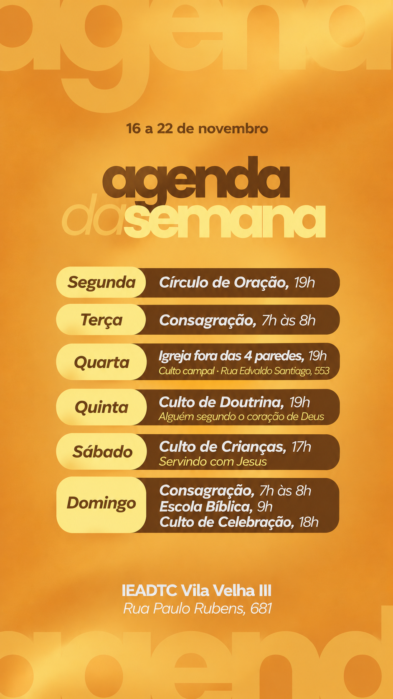

IEADTC Vila Velha III
Resumo semanal
Semana de 16 a 22/11

Mensagem que vai junto
*AGENDA DA SEMANA* _16 a 22 de novembro_ *Segunda, 16/11* 🕖 19h · Círculo de Oração *Terça, 17/11* 🕖 7h às 8h · Consagração *Quarta, 18/11* 🕖 19h · Igreja fora das 4 paredes _Culto campal · Rua Edvaldo Santiago, 553, em frente à praça_ *Quinta, 19/11* 🕖 19h · Culto de Doutrina _Alguém segundo o coração de Deus_ *Sábado, 21/11* 🕖 17h · Culto de Crianças _Servindo com Jesus_ *Domingo, 22/11* 🕖 7h às 8h · Consagração 🕖 9h · Escola Bíblica 🕖 18h · Culto de Celebração 📍 *IEADTC Vila Velha III* _Rua Paulo Rubens, 681 · Vila Velha III_